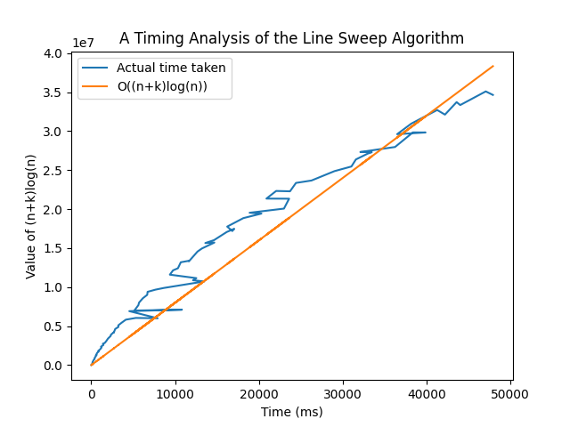

Consider a set of line segments on a plane. The aim of the problem is to compute all the intersection points of these line segments and report them.
The Sweep Line Algorithm uses two data structures, namely, the Event Queue and the Status data structure. The algorithm mentions that a sweep line, which is a horizontal line of the form $y=c$, will be swept from top to bottom. Whenever the sweep line encounters an event point, the data structures are updated accordingly to keep track of line segments and points, and to count and store intersection points. This algorithm runs more efficiently than the brute-force approach with the help of the data structures, which will be briefed upon in the Implementation Details.
We have used AVL Tree to implement the Event Queue and the Status data structures.
The Event Queue is a balanced binary search tree, where each node in the tree stores a point, which is endpoint of a line segment, or an intersection point. Initially the Event Queue contains all the endpoints of every line segment, in decreasing order of their $y$-coordinate, and increasing order of their $x$-coordinate if two or more points share the same $y$-coordinate. A point is removed from the Event Queue once the sweep line passes through it. A point is added to the Event Queue if it is not encountered by the sweep line yet, and is found to be an intersection point.
The Status data structure is a balanced binary search tree, where each node in the tree stores a line segment, which in turn, is a structure containing two points - the endpoints of the line segment. If a sweep line passes through multiple line segments, the status stores the line segments in the order of $x$-coordinate at which the line segment intersects the sweep line. Initially, the status is empty. A line segment is inserted to the status whenever the sweep line passes through the upper point of the line segment, and is deleted from the data structure whenever the sweep line passes through the lower point of the line segment. Whenever the sweep line passes through an intersection point, all the lines containing the intersection point get reversed after the sweep line passes through the intersection point.
In the algorithm, the FindIntersections() function takes the set of all line segments as inputs, adds each point of every line segment to the Event Queue Q. For every point in Q, HandleEventPoint() function is called. Since Q will contain every point of every line segment, as well as the intersection points detected, HandleEventPoint() will be called $2n+k$ times, where $n$ is the number of line segments and $k$ is the number of intersection points.
HandleEventPoint() contains insert, update and delete operations, all of which take $O(log(n))$ time since they are operations performed on a balanced binary search tree. HandleEventPoint() may or may not call FindNewEvent(), but FindNewEvent() takes $O(1)$ time.
Therefore, FindIntersections() is expected to take $O((2n+k)log(n))$ time, or $O((n+k)log(n))$ time.

From the above plot, it is visible that even though the graph seems irregular since the code was tested with random testcases, it tends to follow a linear relationship with $(n+k)log(n)$.
$\dfrac{(n+k)log(n)}{t} = c ; \exists c > 0$
$t = \dfrac{(n+k)log(n)}{c} = p \cdot (n+k)log(n) ;\exists p > 0$
$= O((n+k)log(n))$
Hence, the time complexity of the code is similar to the time complexity of the original algorithm.
Keeping a fixed value of $n$, we generate random testcases so that we get different $k$ values and plot a $t$ vs $k$ graph.
We plot graphs for five different values of $n$: $100, 500, 1000, 2500$ and $5000$.
[Note: Intersection points are marked as red circles]


In cases 4 and 5, we get an intersection point even though the line segments do not intersect. This is because of the floating point inacurracies in C++.
Since we cannot compare two floating point values directly, we need to check whether the difference between the two values is less than a certain threshold. We have used the EPSILON constant in our code to define the threshold, which is $10^{-9}$.
In conclusion, the Line Sweep Algorithm is an efficient algorithm in finding out the intersection points of a set of lines on a plane.
The algorithm is useful not just in direct applications like combining of two or more maps to find connections, but also the idea of the algorithm itself is useful in other applications and fields, such as Computer Graphics, Processor Design and so on, to name a few.